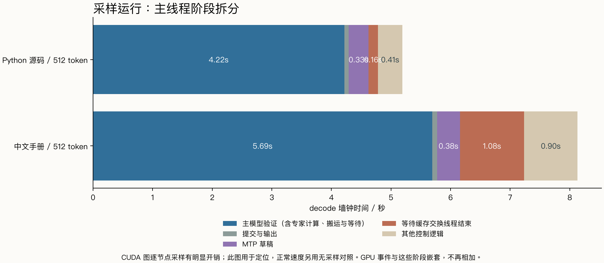
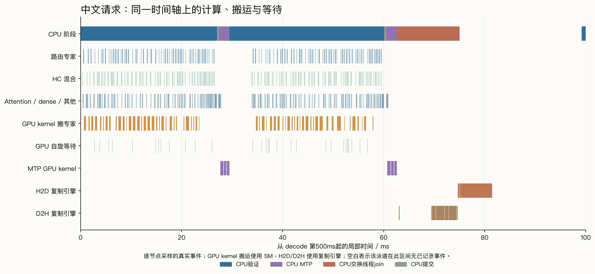
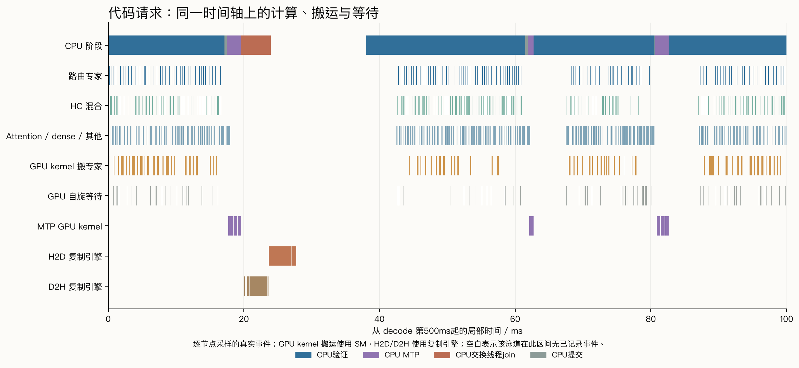

本轮把正常速度测试、CUDA 图逐节点采样、图级采样和引擎分段计时分开记录。较明确的开销来自映射主机权重的 GPU 搬运，以及专家缓存交换的复制、等待与提交；MTP 草稿本身占主线程 decode 时间约 5–6%。参数调整得到小幅收益，尚未得到稳定的大幅提速。
RTX 3090 24GiB / 350W，Xeon Platinum 8260 / 32 vCPU，系统可见约62.76GiB RAM，PCIe Gen3×16；580.126.09 / CUDA12.8。GPU维持软件恢复的原始性能选择寄存器状态。Strata0.1.43，原引擎SHA256 560cb9df5cbc3fa3fa59a7c749fed7514935ed245e6fd85db75d1f79baa37944，源码按既有固定提交 7695859aa13afb248bdb4d36f9b2e95707db079d。
固定两个短输入：连续Python源码、中文数据库手册，实际prompt为71/70 token，每请求生成512 token。32K/int8KV、MTP4、7个专家线程、PCIe份额1、CPU prefill份额0、尾部跳过关闭、prefill2048，无前缀/对话缓存；每次独立启动恢复同一专家画像，预热两份512-token回答，再做两轮测量。它们用于速率与路径分析，本轮未新增编码正确率评分。
正常原引擎的专家缓存为13432槽/18.00GiB。Nsight与标记构建会占额外显存，实际缓存容量见各组environment.json；它们用于归因，速度收益采用无采样的原引擎对照。
Nsight Systems2024.6.2；逐节点采样的decode耗时较采样关闭时增加约23%至38%。NVTX构建仅增加请求、verify、commit/emit、MTP、adapt_join标记，独立链接，原源码与原引擎保持。后续图级采样用于核对较低采样开销和请求收尾。
主线程的verify包含GPU计算、搬运及等待；GPU事件是它内部的活动。下面两张表分别解释墙钟时间与GPU活动，不能跨表求和。
| 逐节点采样，512 token | 代码 | 中文 |
|---|---|---|
| 主模型验证 | 4.217s | 5.692s |
| 提交与输出 | 0.073s | 0.082s |
| MTP草稿 | 0.331s | 0.383s |
| 等待交换线程结束 | 0.160s | 1.077s |
| 其他控制逻辑 | 0.409s | 0.896s |
| decode合计 | 5.190s | 8.130s |

“等待交换线程结束”来自源代码中对adapt_thr的join标记；其他控制逻辑还包括下一窗口准备、pending交换提交与lookup等，未全部归入缓存交换。CPU端GPU-reach wait嵌在verify里，其数值包含GPU推进过程。
| 同一采样运行内的GPU活动，区间并集 | 代码 | 中文 |
|---|---|---|
| 路由专家gate/up/down kernel | 0.663s | 0.783s |
| HC混合kernel | 0.671s | 0.807s |
| Attention、dense及其他（含共享专家通用投影） | 1.527s | 1.868s |
| MTP内GPU kernel | 0.255s | 0.297s |
| 映射权重的GPU搬运kernel | 0.599s | 1.198s |
| flag自旋kernel | 0.179s | 0.232s |
不同GPU类别可并发，类别区间并集也不构成严格的墙钟时间分割。HC来自fused_gr.cu，负责Hyper-Connection读/混合；共享专家的矩阵投影复用通用MMVQ，未仅凭kernel名字硬拆。引擎独立分段计时中，shared+quant约1.10ms/window（代码）、1.08ms/window（中文），仅作辅助参考；该模式关闭部分融合和共享专家并行。
默认auto在本构建中选pcie_mode=2。CPU发布主机映射地址，GPU在verify流上执行fetch_blobs，把未驻留专家搬到暂存区，再计算。CUDA复制引擎的H2D/D2H记录另含缓存热冷交换等活动，因此仅看cudaMemcpy会漏掉GPU kernel发起的PCIe读。
| decode区间内复制引擎 | 代码 | 中文 |
|---|---|---|
| H2D字节量 | 1.222GB | 2.696GB |
| H2D区间并集耗时 | 0.104s | 0.230s |
| D2H字节量 | 1.125GB | 2.459GB |
| D2H区间并集耗时 | 0.088s | 0.191s |
这些是decode范围内的复制记录，已排除前面的prompt；仍不等于PCIe全部字节量。resident_stage_swaps先把将被逐出的专家从GPU读回RAM缓冲，等该轮读回完成，再安排热专家入GPU；apply_pending提交更新。当前采样中这些复制未与已记录的数学kernel重叠，诊断局部如下。


按每个verify图的48个层子图、每层三个等待节点的源码顺序，区分waitA、waitB和waitCPU；每图要求完整144个节点，分类校验见sync-classification.json。
| 等待kernel的GPU区间并集 | 代码 | 中文 |
|---|---|---|
| waitA | 118.7ms | 154.9ms |
| waitB | 32.9ms | 41.1ms |
| waitCPU | 27.8ms | 35.6ms |
verify.cpp在waitB后执行fetch_blobs，随后才记分段stamp21。因此内置“waitB”区间包含搬专家的kernel；中文分段约5.55ms/window，不能全部解释成flag自旋。Nsight直接记录的waitB kernel合计约41ms，搬运kernel则约1.20秒。
第一轮kernel/DMA/direct筛选期间有标记构建，成绩单列为初筛。最终主要比较编译完成后的kernel→DMA及DMA→kernel反向顺序，各配置两个独立启动、每种输入共四次请求。交换周期16和resident overlap各一次启动、两轮，样本较少。
| 配置 | 代码decode token/s | 中文decode token/s | 代码客户端TPOT ms | 中文客户端TPOT ms |
|---|---|---|---|---|
| kernel，周期4（两个启动） | 121.10 | 85.85 | 8.25 | 11.65 |
| DMA，周期4（两个启动） | 124.30 | 87.55 | 8.03 | 11.43 |
| kernel，周期16（一个启动） | 120.35 | 87.55 | 8.33 | 11.43 |
| kernel，周期4 + resident overlap（一个启动） | 124.45 | 87.45 | 9.13 | 11.44 |
引擎decode token/s来自predicted_ms；客户端TPOT统一用(E2E−TTFT)/(512−1)，含最后内容到SSE结束的等待。DMA首个独立对照约+4%，反向顺序则接近持平；合并中位数约代码+2.6%、中文+2.0%，重复范围有重叠。它是小幅候选。
周期16的代码首轮113.4、次轮127.3 token/s，热度追踪变慢后有明显冷热取舍。resident overlap把其他控制逻辑从约3–5ms/window压到约0.7–1.1，但verify阶段的逐层等待增多，净收益只有几个百分点。其一次代码请求在最后内容后还有约1.14秒才结束；原始事件保留，不能仅按引擎token/s采用。
上述正常对照的两份512-token内容哈希逐一一致，见request-audit.json。这里验证的是这两份输出一致，本轮未新增通用代码评分。
| 图级采样 | decode ms | MTP ms | 交换线程join ms | 最后内容到结束 ms |
|---|---|---|---|---|
| trace-r1-decode-0 | 4379.1 | 289.0 | 188.5 | 0.5 |
| trace-r1-decode-2 | 6447.2 | 338.7 | 628.3 | 0.6 |
| trace-r2-decode-0 | 4574.2 | 283.8 | 428.4 | 0.7 |
| trace-r2-decode-2 | 6815.4 | 337.0 | 626.7 | 93.6 |
图级采样仍有开销，且工具的显存占用改变少量缓存槽；它用于核对阶段与收尾，未纳入无采样速度排名。四次图级采样未重现1.14秒尾部等待：三次最后内容至结束约0.5–0.7ms，一次约93.6ms。后一条收尾区间内的CUDA EventSynchronize只有约0.29ms，余下时间尚不能归为GPU同步；原始客户端事件与CUDA API时间戳均保留。
注意：这是短上下文、单请求、固定512-token负载。正常测量与诊断各自保留；初筛、采样与辅助分段未混入最终性能提升百分比。较长编码上下文、不同任务和并发仍需独立验证。本轮未采Nsight Compute硬件计数器，当前能定位时间开销，尚未判定每个kernel是DRAM带宽、指令吞吐还是occupancy达到上限。